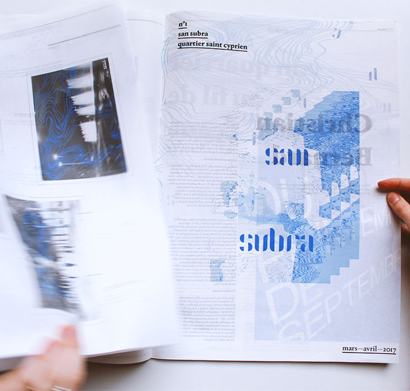
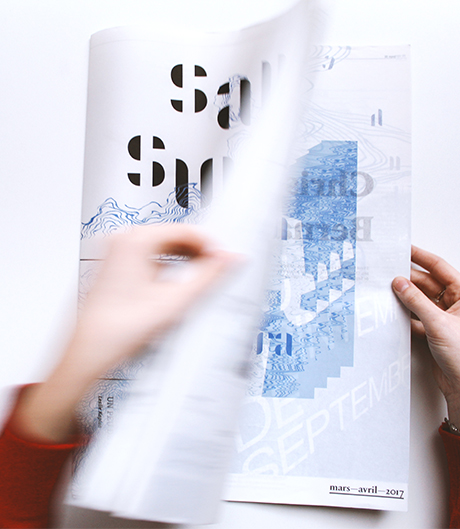
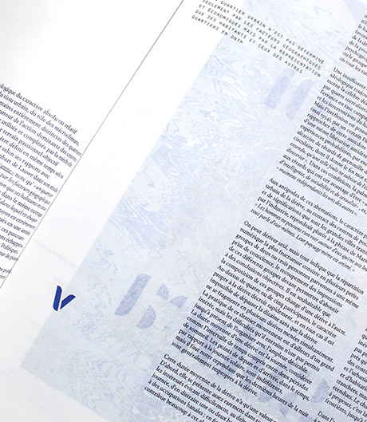
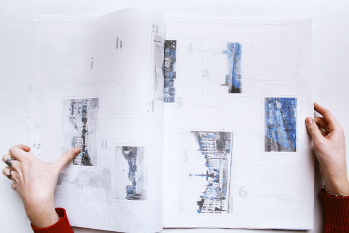
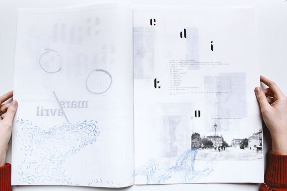
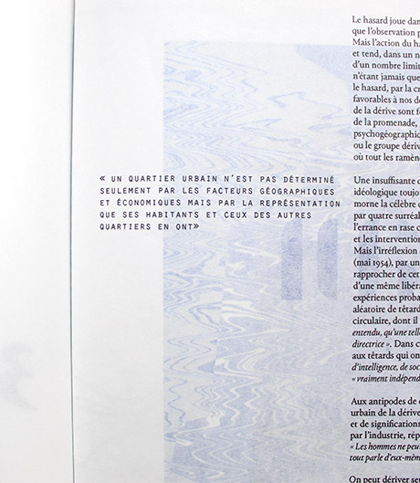
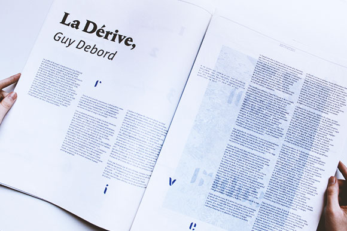
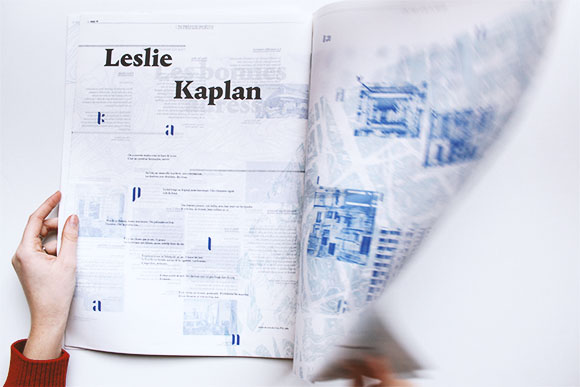
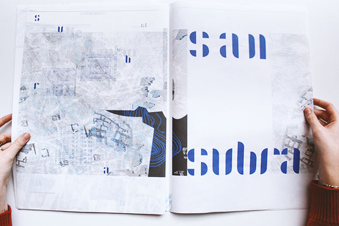
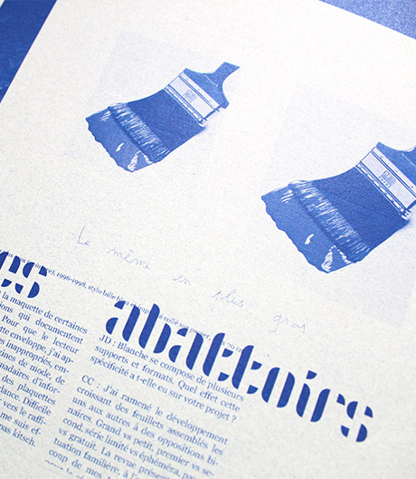

San Subra—Neighborhood newspaper
Diploma project
Open dimensions—A2 / printed on washi paper
Toulouse—June 2017
Project under development with the association « Saint Cyprien quartier libre »
A study conducted around the appropriation of the living environnement. The project took all its meaning in various works dealing
in particular with the notion of culture in the social sciences, the participative habitat or the urbanism of the models. This production
presents a duality between the will to create different forms of exchanges and uses and a questioning around behavior or even a set
of gestures and habits conditioned by a given space. The project consists of putting in place tools enabling residents to take ownership
of their neighborhood, even in a minimal way. The tool developed here is a bi-monthly newspaper that provides different types
of information and does not meet the codes of existing municipal newspapers. This experience aims to enhance the human scale
of the neighborhood and allow residents to be the main actors of their living space, it is an invitation to participate. This project
focuses on the experience in time and space. The threads are the elements that will evolve over the editions. They are the result
of a process of extraction from neighborhood postcards the earlier dating from the early 1900s. Some are based on population flows,
plans, elevations, levels, or architecture.
This project is part of an approach that has led to ongoing projects, including an interactive platform for exchanges and encourages
the participation and commitment of designers in the social space.
A study conducted around the appropriation of the living environnement. The project took all its meaning in various works dealing
in particular with the notion of culture in the social sciences, the participative habitat or the urbanism of the models. This production
presents a duality between the will to create different forms of exchanges and uses and a questioning around behavior or even a set
of gestures and habits conditioned by a given space. The project consists of putting in place tools enabling residents to take ownership
of their neighborhood, even in a minimal way. The tool developed here is a bi-monthly newspaper that provides different types
of information and does not meet the codes of existing municipal newspapers. This experience aims to enhance the human scale
of the neighborhood and allow residents to be the main actors of their living space, it is an invitation to participate. This project
focuses on the experience in time and space. The threads are the elements that will evolve over the editions. They are the result
of a process of extraction from neighborhood postcards the earlier dating from the early 1900s. Some are based on population flows,
plans, elevations, levels, or architecture.
This project is part of an approach that has led to ongoing projects, including an interactive platform for exchanges and encourages
the participation and commitment of designers in the social space.










